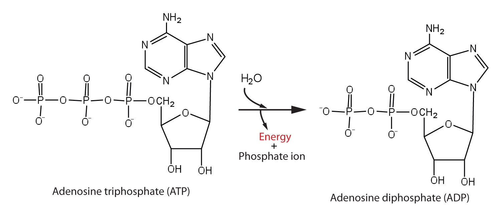
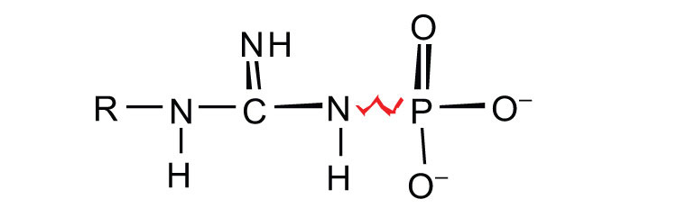
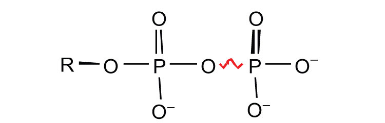

Adenosine triphosphate (ATP), a nucleotide composed of adenine, ribose, and three phosphate groups, is perhaps the most important of the so-called energy-rich compounds in a cell. Its concentration in the cell varies from 0.5 to 2.5 mg/mL of cell fluid.
Energy-rich compounds are substances having particular structural features that lead to a release of energy after hydrolysis. As a result, these compounds are able to supply energy for biochemical processes that require energy. The structural feature important in ATP is the phosphoric acid anhydride, or pyrophosphate, linkage:
The pyrophosphate bond, symbolized by a squiggle (~), is hydrolyzed when ATP is converted to adenosine diphosphate (ADP). In this hydrolysis reaction, the products contain less energy than the reactants; there is a release of energy (> 7 kcal/mol). One reason for the amount of energy released is that hydrolysis relieves the electron-electron repulsions experienced by the negatively charged phosphate groups when they are bonded to each other (Figure 20.3 "Hydrolysis of ATP to Form ADP").
Figure 20.3 Hydrolysis of ATP to Form ADP
Energy is released because the products (ADP and phosphate ion) have less energy than the reactants [ATP and water (H2O)].
The general equation for ATP hydrolysis is as follows:
ATP + H2O → ADP + Pi + 7.4 kcal/molIf the hydrolysis of ATP releases energy, its synthesis (from ADP) requires energy. In the cell, ATP is produced by those processes that supply energy to the organism (absorption of radiant energy from the sun in green plants and breakdown of food in animals), and it is hydrolyzed by those processes that require energy (the syntheses of carbohydrates, lipids, proteins; the transmission of nerve impulses; muscle contractions). In fact, ATP is the principal medium of energy exchange in biological systems. Many scientists call it the energy currency of cells.
Pi is the symbol for the inorganic phosphate anions H2PO4− and HPO42−.
ATP is not the only high-energy compound needed for metabolism. Several others are listed in Table 20.1 "Energy Released by Hydrolysis of Some Phosphate Compounds". Notice, however, that the energy released when ATP is hydrolyzed is approximately midway between those of the high-energy and the low-energy phosphate compounds. This means that the hydrolysis of ATP can provide energy for the phosphorylation of the compounds below it in the table. For example, the hydrolysis of ATP provides sufficient energy for the phosphorylation of glucose to form glucose 1-phosphate. By the same token, the hydrolysis of compounds, such as creatine phosphate, that appear above ATP in the table can provide the energy needed to resynthesize ATP from ADP.
Table 20.1 Energy Released by Hydrolysis of Some Phosphate Compounds
| Type | Example | Energy Released (kcal/mol) |
|---|---|---|
|
acyl phosphate |
1,3-bisphosphoglycerate (BPG) | −11.8 |
| acetyl phosphate | −11.3 | |
|
guanidine phosphates

|
creatine phosphate | −10.3 |
| arginine phosphate | −9.1 | |
|
pyrophosphates

|
PPi* → 2Pi | −7.8 |
| ATP → AMP + PPi | −7.7 | |
| ATP → ADP + Pi | −7.5 | |
| ADP → AMP + Pi | −7.5 | |
|
sugar phosphates |
glucose 1-phosphate | −5.0 |
| fructose 6-phosphate | −3.8 | |
| AMP → adenosine + Pi | −3.4 | |
| glucose 6-phosphate | −3.3 | |
| glycerol 3-phosphate | −2.2 | |
| *PPi is the pyrophosphate ion. | ||
Why is ATP referred to as the energy currency of the cell?
ATP is the principal molecule involved in energy exchange reactions in biological systems.
How do ATP and ADP differ in structure?
Why does the hydrolysis of ATP to ADP involve the release of energy?
Identify whether each compound would be classified as a high-energy phosphate compound.
Identify whether each compound would be classified as a high-energy phosphate compound.
ATP has a triphosphate group attached, while ADP has only a diphosphate group attached.